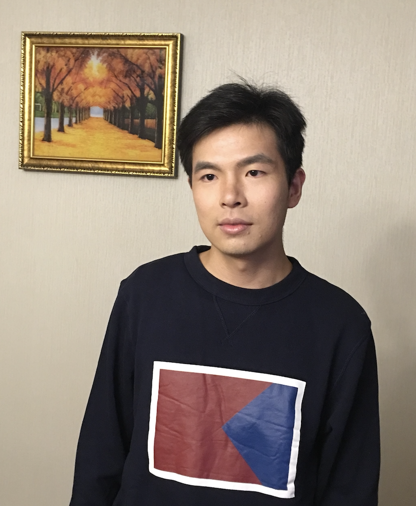

|  |
|
{kind=link}
{kind=link}
|
01/24 |
One paper accepted at theWebConf '24! |
|
01/24 |
One paper accepted at ICLR '24! Check out the preprint here! |
|
12/23 |
One paper accepted at AAAI '24! Check out the preprint here! |
| WWW 2024 |
Zhen Zhang, Meihan Liu, Anhui Wang, Hongyang Chen, Zhao Li, Jiajun Bu, Bingsheng He ACM The Web Conference, 2024. pdf / code |
| ICLR 2024 |
Qian Wang, Zhen Zhang, Zemin Liu, Shengliang Lu, Bingqiao Luo, Bingsheng He The Twelfth International Conference on Learning Representations, 2024. openreview / pdf / code |
| AAAI 2024 |
Meihan Liu, Zeyu Fang, Zhen Zhang, Ming Gu, Sheng Zhou, Xin Wang, Jiajun Bu The 38th Annual AAAI Conference on Artificial Intelligence, 2024. pdf / code |
| NeurIPS 2023 |
Zhen Zhang, Bingqiao Luo, Shengliang Lu, Bingsheng He The Thirty-seventh Annual Conference on Neural Information Processing Systems, 2023. openreview / pdf / code |
| SIGKDD 2023 |
Johan Kok Zhi Kang, Sien Yi Tan, Bingsheng He, Zhen Zhang The 29th ACM SIGKDD Conference on Knowledge Discovery and Data Mining, 2023. |
| WWW 2023 |
Sihao Hu, Zhen Zhang, Bingqiao Luo, Shengliang Lu, Bingsheng He, Ling Liu ACM The Web Conference, 2023. |
| SIGMOD 2023 |
Sihao Hu, Zhen Zhang, Shengliang Lu, Bingsheng He, Zhao Li The ACM on Management of Data, 2023. |
| ECCV 2022 |
Ning Ma, Hongyi Zhang, Xuhui Li, Sheng Zhou, Zhen Zhang, Jun Wen, Haifeng Li, Jingjun Gu, Jiajun Bu European Conference on Computer Vision, 2022. |
| MM 2021 |
Chunbin Gu, Jiajun Bu, Zhen Zhang, Zhi Yu, Dongfang Ma, Wei Wang The 29th ACM International Conference on Multimedia, 2021. |
| TKDE 2021 |
Zhen Zhang, Jiajun Bu, Martin Ester, Jianfeng Zhang, Zhao Li, Chengwei Yao, Huifen Dai, Zhi Yu, Can Wang IEEE Transactions on Knowledge and Data Engineering, 2021. pdf / code |
| SIGKDD 2021 |
Zhen Zhang, Jiajun Bu, Martin Ester, Zhao Li, Chengwei Yao, Zhi Yu, Can Wang The 27th ACM International Conference on Multimedia, 2021. pdf / code |
| TOIS 2021 |
Sheng Zhou, Xin Wang, Martin Ester, Bolang Li, Chen Ye, Zhen Zhang, Can Wang, Jiajun Bu ACM Transactions on Information System, 2021. pdf / code |
| CIKM 2020 |
Ning Ma, Jiajun Bu, Jieyu Yang, Zhen Zhang, Chengwei Yao, Zhi Yu, Sheng Zhou, Xifeng Yan The 29th ACM International Conference on Information and Knowledge Management, 2021. pdf / code |
| WWW 2020 |
Zhen Zhang, Jiajun Bu, Martin Ester, Jianfeng Zhang, Chengwei Yao, Zhao Li, Can Wang ACM The Web Conference, 2020. pdf / code |
| arXiv 2019 |
Zhen Zhang, Jiajun Bu, Martin Ester, Jianfeng Zhang, Chengwei Yao, Zhi Yu, Can Wang In arXiv:1911.05954, 2019. pdf / code |
| IJCAI 2018 |
Zhen Zhang, Hongxia Yang, Jiajun Bu, Sheng Zhou, Pinggang Yu, Jianwei Zhang, Martin Ester, Can Wang The Twenty-Seventh International Joint Conference on Artificial Intelligence, 2018. pdf / code |
|
|
Sep 2021 - Current
|
|
|
Sep 2015 - Jun 2021
|
|
|